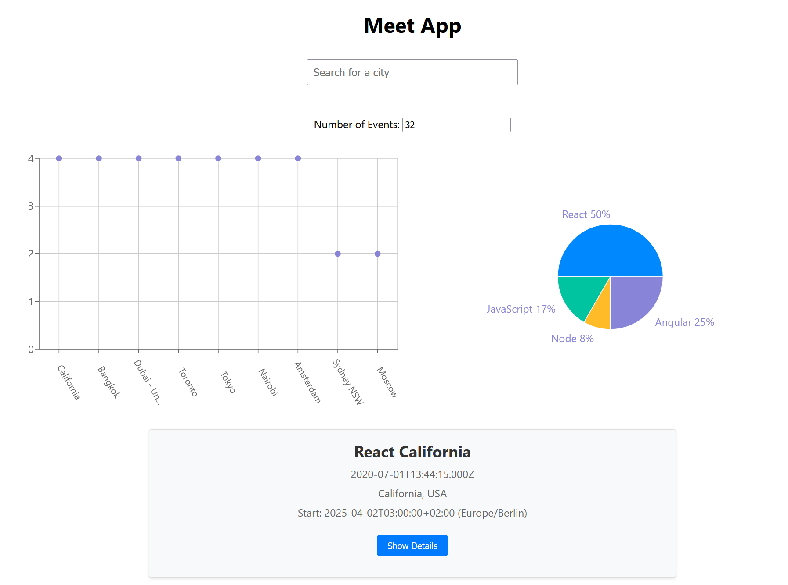

Meet App
Project Overview
A serverless, progressive web application (PWA) built with React using a test-driven development (TDD) approach. The app uses the Google Calendar API to fetch upcoming events and allows users to search for events by city, view event details, and customize the number of events displayed.
Key Features
- Filter events by city
- Show/hide event details
- Specify number of events to display
- Use the app when offline
- Add an app shortcut to the home screen
- View a chart showing number of upcoming events by city
Technologies Used
- React
- AWS Lambda
- Google Calendar API
- OAuth2 Authentication
- Jest & Cucumber for Testing
- Recharts for Data Visualization
Development Process
This project was developed using a test-driven development (TDD) approach, ensuring high code quality and maintainability. The development process included:
- Writing user stories and acceptance criteria
- Creating test scenarios using Jest and Cucumber
- Implementing features incrementally
- Continuous integration and deployment
- Performance optimization and accessibility improvements